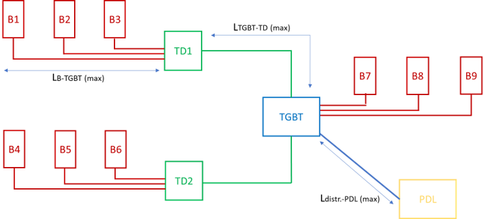
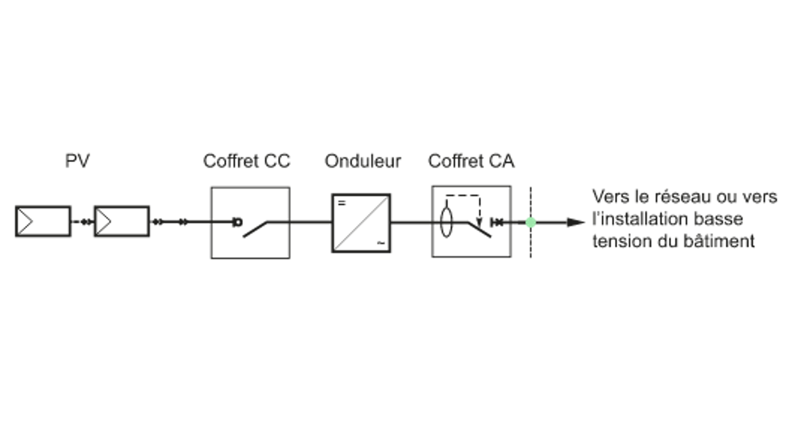
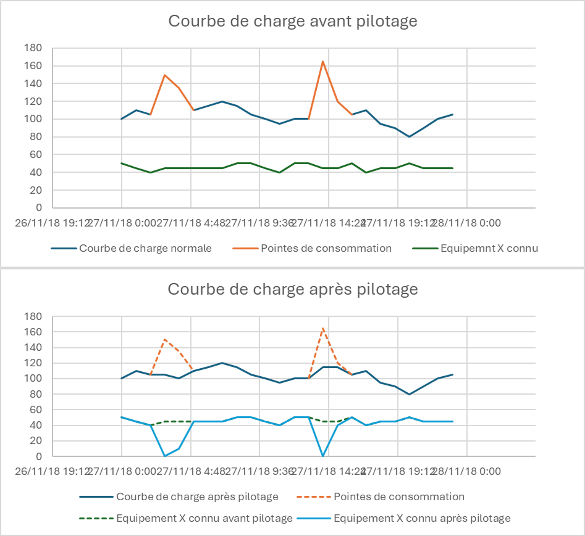

Engineering tools for the energy transition
For three years, I designed engineering tools built around Excel and VBA: two sizing and costing tools (electric vehicle charging, photovoltaics) and an approach to smart building management, simulated with machine learning. What they have in common: encapsulating a complex technique so that sales staff and business engineers, who are not electrical specialists, can produce reliable studies.
The context
The goal is to respond to energy transition offers with structured approaches and precise costings. My mission: automate technical studies and standardize methods, making the technical side invisible to the user. I led most of these projects on my own, then became the technical lead on EV charging and photovoltaics for the sales and technical teams.
Tool 1: sizing and costing of EV charging stations
The principle. The user describes the installation with little information, all of it non-technical: charging station model, cable, conduit and trench lengths, concrete base if any. The tool sizes the entire electrical part, from the delivery point to the charging stations, then costs the whole.
The architecture. A main interface, a reference database and processing modules driven by VBA macros.
The modelling. An installation is a graph: the nodes are the charging stations and the electrical panels, the edges are the cabled links. This representation is easy for a machine to process and remains readable for colleagues. A tutorial and technical documentation explain the method.

The calculations. Cable cross-sections, ratings of protective devices, enclosure sizes, conduit and trench dimensions, in compliance with the NF C 15-100 standard, then selection of references from the database. The aggregation of power relies on a combinatorial optimization algorithm inspired by the knapsack problem: it distributes the loads across the three phases to obtain the lowest possible maximum line power. The stakes are economic, because the price of equipment rises sharply with the rating of protective devices and cables.
The network. The charging stations communicate with a supervision service via the OCPP protocol. The tool also costs the associated IT network: switches, 4G modem, subscription.
The costing. For each charging station and each panel: references, unit prices, quantities and unit installation times, calibrated on feedback from experience and the opinion of professionals. Administrative procedures are included. The result serves as a reference for building an offer and for challenging subcontractors’ prices.
Tool 2: photovoltaic sizing and costing
The need. On one side, well-established marketing and performance guarantees; on the other, tools for calculating yield and for financial studies. What was missing was the intermediate link: the installation itself, with its technical characteristics, its limits and its fairest price. I started with technology and regulatory monitoring, including on battery storage, before designing the tool.
The architecture. An equipment database, a dynamic interface, calculation and optimization algorithms, a single-line diagram generator and a quote and business plan export. Several months of work.
An interface that guides. The choices offered adapt to the previous answers, which limits design errors. The data requested stays simple (roof sections, orientation, estimated lengths), never voltages or currents.
The modelling. A reference architecture represented as a tree: the delivery point at the root, then an electrical panel, the inverters, their inputs, the panel strings and the junction boxes. I removed everything superfluous to keep only the skeleton of an installation.

The key algorithm. For each roof section, the tool calculates a panel layout, then looks for the series/parallel wiring that respects the voltage and current limits of the inverters while limiting the number of strings, and therefore of inverter inputs used. Modelling this problem with modular arithmetic (solving systems of congruences “in reverse”) was the real difficulty: several days of work, for a program written in VBA.
The deliverables. A single-line diagram drawn automatically with Excel’s graphical tools, precise enough to be reviewed by experts, and a quote whose formulas remain visible, with adjustable margin rates and optional services (maintenance, cleaning, insurance, remote management).
The deployment. Presentation to the sales teams, documentation with examples, then follow-up and continuous improvement based on user feedback.
Tool 3: smart building management (Smart Grid)
The scope. My final-year project, on a little-developed subject. The aim was not a ready-to-use product, but a study approach to estimate the financial and energy stakes of managing consumption.
The principle. The load curve of a building is the sum of its consumptions, which I split into two categories: controlled consumers (heat pumps, ventilation, air conditioning) and stochastic consumers (lighting, electronics). When a peak appears, the system acts on the controlled equipment, within the limits of their usage constraints (temperature, CO2 level, humidity): load shedding or reduced mode, according to a priority order. The result is a smoothing of the load curve and a reduction of the subscribed power.
The simulation. An algorithm in Python, driven from Excel, simulates the operation of a control unit. It offers two simulations: a statistical estimate over one year from a sample of randomly drawn days (a much faster calculation, with a controlled margin of error), and a simulation over a few consecutive days to visualize the effect. The summary compares power and energy before and after control, and puts a figure on the annual saving on the subscription.
The real challenge: detecting peaks in time. An STL decomposition (Seasonal and Trend decomposition) splits the curve into seasonality, trend and residuals: a peak is an anomaly relative to the natural behaviour of the building. But how do you predict what you cannot describe?
To tell peaks apart from the normal signal, you have to smooth. Any mathematical smoothing of a real-time signal lags behind; exponential smoothing gives a controlled lag. I then tested differentiation and several anomaly detection models (Local Outlier Factor, autoencoder, KNN, via the PyOD library, validated with AUROC). None was conclusive: seasonality drowns out the peaks, and the peak has to arrive before it can be detected.
The chosen solution. A predictive model, Prophet, chosen for its simplicity: few parameters, no calibration before each use (unlike ARMA-type models), and therefore usable by colleagues. It predicts the curve in the short term; studying the first derivatives of the gap with the real signal flags a peak, without a fixed power threshold. The load shedder then applies the reduced modes and estimates the impact on the building.

The limits. The simulation acts on consumption curves rather than on the behaviour of the equipment, and smoothing is not guaranteed for every peak.
Why Excel
The choice of Excel was imposed at the outset. I turned it into an advantage: an intuitive tool, with no installation, easy to maintain and already mastered by design and business engineers. VBA provides the logic, the dynamic interfaces and the diagram generation; Python provides the machine learning, called from Excel. The flip side is a requirement for rigour: a file that carries business rules must be structured and documented like software.
What I take from it
- The hardest part is not the calculation, but the balance between the simplicity of what the user sees and the complexity of what the tool does.
- Modelling the problem is the real work: a graph, a tree or a system of congruences then make the algorithm simple.
- The best model is the one the user can run alone: I set aside more conventional models because they required calibration at each use.
- Documenting and training are part of the deliverable: tutorial, technical documentation, presentation to the teams, follow-up.
- This approach is the one I apply today, in a more tightly regulated environment.